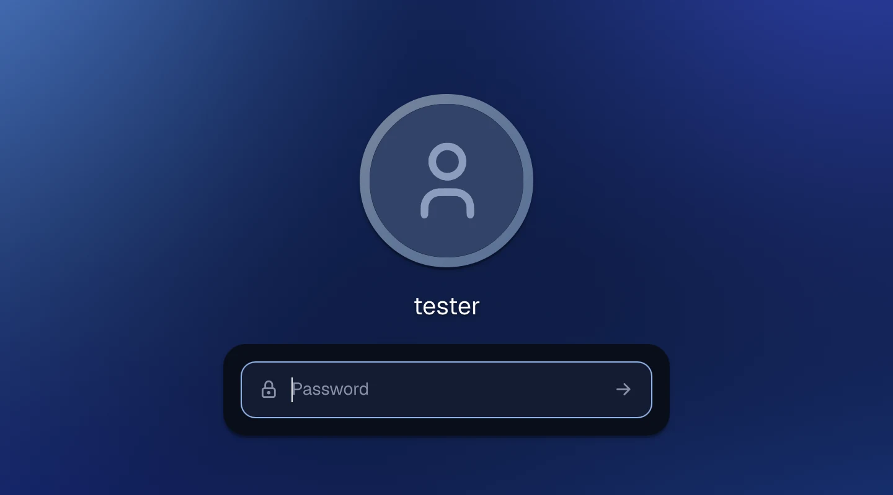
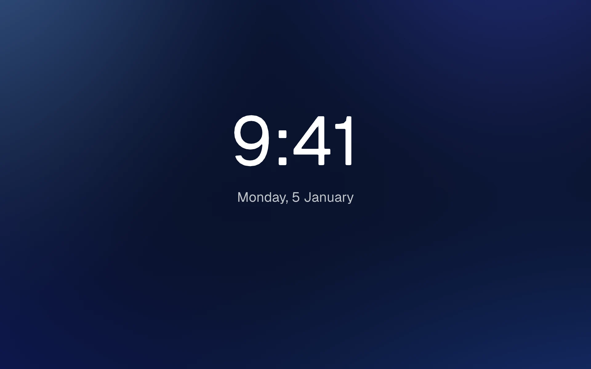
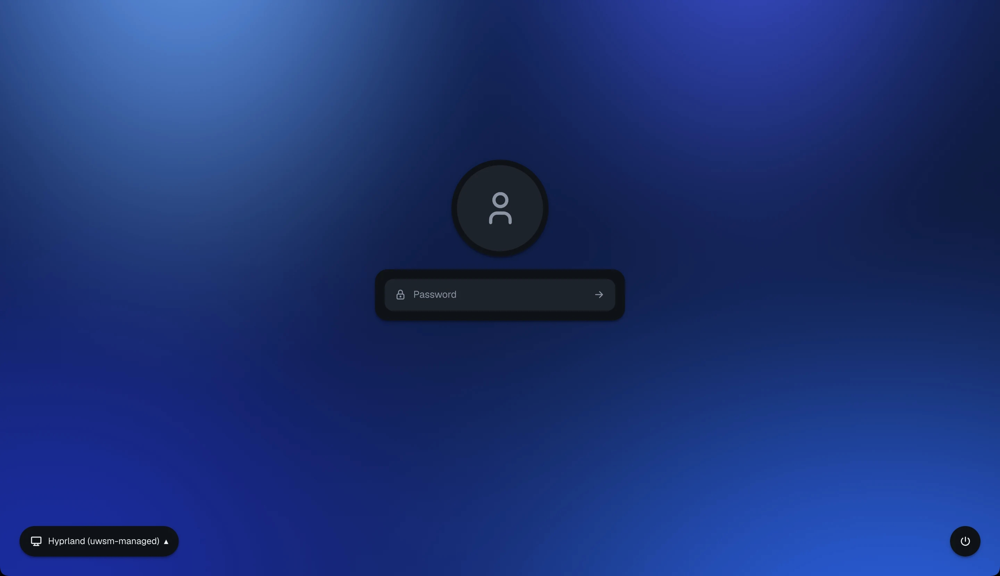

Your computer
Locking and login
Your screen locks when you ask it to, when you step away, and before your computer sleeps. Slate can also show something calm while you're gone, and, if you'd like, give you a login screen that matches.
The lock screen
Lock your screen with Super + L, from the power menu, or with a hot corner. The lock screen shows your wallpaper and your picture, and takes your account password. It fades in over your desktop and back out once you're in, but it's fully locked the whole time: nothing gets past it while it fades.

If the password's wrong a few times in a row, the lock screen asks you to wait a little before trying again, and shows how long. A Caps Lock indicator lets you know if it's on. If your account also asks for something after the password, such as a one-time code, the lock screen and the login screen show the question and wait for your answer; Escape takes you back to the password.
Your apps and windows stay open just as you left them while the screen's locked.
Lock screen settings
In Settings → Security, under Locking:
| Setting | What it does |
|---|---|
| Lock screen | Preview shows the lock screen without locking (your password still closes it), and Lock now locks straight away. |
| Power menu on the lock screen | Adds a power button to the lock screen. It's off to start with, because it lets anyone at the keyboard suspend, restart, shut down or log you out without your password. |
| Lock before sleep | Locks the screen whenever the computer suspends or hibernates. On to start with. |
The lock screen follows your look, glass included. Change your picture in Settings → General (see Your picture and location).
Unlocking with your face
The lock screen can let you in when it sees your face, so you don't have to type your password. Your password always works too, at any moment, so a camera that can't see you never locks you out. Set it up in Settings → Security → Face, Fingerprint & Keys.
It needs Howdy, which recognizes your face through your camera. Slate doesn't install it
for you: on Arch it's howdy-next in the AUR; on other systems, follow Howdy's own instructions.
The page says when it's missing.
| Setting | What it does |
|---|---|
| Camera | The camera Howdy looks through. Slate picks an infrared one if you have one (a webcam made for Windows Hello, say): it sees you in the dark, and a photo can't fool it. A camera that isn't infrared works, but the page warns you that a photo of you could fool it. |
| Your face | Add your face asks first, then your password, then looks at you for a few seconds. Give each look a name; adding another (with glasses, say) helps it know you. Each look has Remove. Try it checks it recognizes you, without locking. |
| Unlock with your face | The lock screen looks for your face when you come back to it, and says so under the password box. When it locked by itself (you were away, or the computer slept), that's as soon as it wakes. When you locked it yourself (Super + L, Lock now, the power menu), you're probably still in front of the camera, so it waits until you press a key or move the pointer, and not in the first few seconds. Turning it on or off asks for your password. |
Your faces are kept by Howdy on this computer only, and only the lock screen uses them: sudo,
the login screen and other apps still ask for your password.
Unlocking with your fingerprint
With a fingerprint reader, the lock screen can take your fingerprint instead of your password, which
always works too. Set it up on the same page,
Settings → Security → Face, Fingerprint & Keys, under
Fingerprint. It needs fprintd: install fprintd with your package
manager (on Debian and Ubuntu, libpam-fprintd too). The page says when it's missing, or when
there's no reader it supports.
| Setting | What it does |
|---|---|
| Your fingers | Each finger you've added, with Remove (it asks first). |
| Finger to add | Which finger Add learns next. Adding one asks first, then has you touch the reader, lift and touch again until it says it's done, telling you how each touch went. |
| Your fingerprints | Try it checks the reader knows you, without locking. |
| Unlock with your fingerprint | The lock screen takes your fingerprint, and says so under the password box. With your face on too, it looks for your face first. Turning it on or off asks for your password. |
Unlocking with a security key
A security key (a YubiKey, say) can unlock the lock screen with a touch. Your password always works too, so a
lost key never locks you out. Set it up under Security keys on the same page,
Settings → Security → Face, Fingerprint & Keys. It
needs pam-u2f: install pam-u2f with your package manager (on Debian and Ubuntu,
libpam-u2f and pamu2fcfg).
| Setting | What it does |
|---|---|
| Your keys | Each key you've added, by the name you gave it, with Remove (it asks first). |
| Your security key | Add a key asks for a name, then has you touch the key, then asks for your password to save it. A spare key keeps a way in if one's lost. |
| Unlock with your security key | The lock screen lets you in when you touch your key. Turning it on or off asks for your password. |
Only each key's public half is kept, in a list Slate's helper looks after outside your home folder, so nothing running as you can add a key behind your back.
Locking when you're away
Under When you're away, Slate can lock, turn the screen off and suspend after times you choose:
| Setting | To start with |
|---|---|
| Lock after | 10 minutes |
| Turn the screen off after | 15 minutes. Moving the mouse or pressing a key turns it back on. |
| Suspend after | Never |
| Wait while media plays | On: you're not counted as away while something plays full screen, or an app is keeping the screen awake. That holds off the screensaver too. Music playing in the background doesn't count. |
When Slate suspends your computer for being idle, it locks first.
The screensaver
The screensaver covers the screen while you're away, before the lock and screen-off times above. Any key, click or move of the pointer puts it away. Set it up in Settings → Screensaver.

Styles
- Your wallpaper, dimmed and slowly drifting.
- Wallpaper slideshow: the pictures in your wallpaper folder, changing every 10 seconds to 5 minutes (Change picture every).
- Videos: silent clips, fading from one to the next.
- Black, the one it starts with.
Show the clock adds the time and date to any of them. On black, the clock moves now and then, so nothing burns into your screen.
Videos
Point Videos folder at a folder of your own clips, or click Get scenery videos for twelve free scenery clips: Earth from the space station, an aurora, a waterfall, penguins and more. Scenery quality chooses how sharp they are, from 1080p (about 410 MB in all) to 4K (about 1.1 GB). Automatic picks what suits your screen.
The Videos style needs Qt Multimedia (qt6-multimedia).
Timing and preview
| Setting | What it does |
|---|---|
| Start after | How long you're away before it starts. 5 minutes to start with. |
| Lock on wake | Waking it shows the lock screen, so you'll need your password to get back in. Off to start with. |
| Preview | Shows it now. Any key, click or move of the pointer puts it away (a preview never locks). |
The login screen
Installing Slate adds Slate to the login screen you already have, and that's all. If you'd like a login screen that matches Slate, with your wallpaper and picture, Slate has one of its own, built on greetd. It's entirely optional, and nothing changes until you choose it.

With more than one person on the computer, the bottom middle shows who's logging in: choose it to pick someone else from the list. It starts on whoever logged in last. Each person sees their own look there, with their wallpaper, colors and picture, once they've logged in to Slate. Only how their desktop looks goes in, never the rest of their settings.
Logging in with your face, a fingerprint or a key
Each way in on Settings → Security → Face, Fingerprint & Keys has its own On the login screen switch (Face on the login screen, and so on), for Slate's own login screen. Once the login screen is up and showing your account, it looks for your face, or waits for your finger or key, and says so under the password box. If that doesn't work, it asks for your password, and a password you type while it's looking is kept for that moment. Your password always works.
Your saved passwords (the keyring, which some apps keep your logins in) are unlocked by typing your password
when you log in. Logging in another way leaves them locked until an app asks for your password. Turning a switch
on or off asks for your password, and counts from your next login. Only Slate's login screen changes: other
login screens, sudo and text logins still ask for your password.
Installing it
In Settings → Security → Login screen, try Preview first if you like. Then Install explains what's involved before it does anything, and asks for your password. It needs greetd; if your computer starts a different login screen (GDM, SDDM or LightDM), Settings says so and gives you the command to switch.
Slate's login screen replaces your system's, and runs before anyone logs in. Slate tests every update before it's installed, and keeps the last version that worked and a basic emergency login to fall back on, so it's very unlikely to leave you stuck. If it ever does, see Troubleshooting.
Keeping it in step
Your wallpaper, look and picture follow along by themselves. When the login screen's own design changes in a Slate update, Slate asks for your password once to update it, with a notification that stays until you answer. Later waits a week. The same Update button is in Settings.
If you changed something outside Slate, like replacing your wallpaper file in place, Resync in Settings → Debug brings the login screen up to date.
Going back
Switch back, in the same place in Settings, puts your old login screen back just as it was.
The firewall
A firewall stops other computers on your network reaching this one in ways you haven't allowed, while everything you do yourself, like browsing and downloading, works as usual. Firewall, at the end of Settings → Security, says which firewall your computer has and whether it's on, and switches it.
- ufw (CachyOS, Ubuntu and others) and firewalld (Fedora, openSUSE): turn it on or off with the switch. Either way it asks for your password, and turning it off asks you first.
- NixOS: it shows whether it's on; change it in your configuration
(
networking.firewall). - No firewall at all: Settings says so, with a button to install your distro's usual one (ufw, or firewalld on Fedora and openSUSE). It arrives off, for you to turn on.
With it on, four switches let in what you might want from other computers. Each opens only what that needs, and only from your own network, never from the internet:
| Setting | Lets in |
|---|---|
| KDE Connect | Your phone and this computer finding each other, for notifications, files and the clipboard (KDE Connect and GSConnect). |
| File sharing | Other computers on your network opening folders you share (Samba). |
| Remote login | Logging in to this computer from another one on your network (SSH). |
| Game streaming | Steam Remote Play, and game downloads from your other computers. |
They start off, and each asks for your password when you change it.